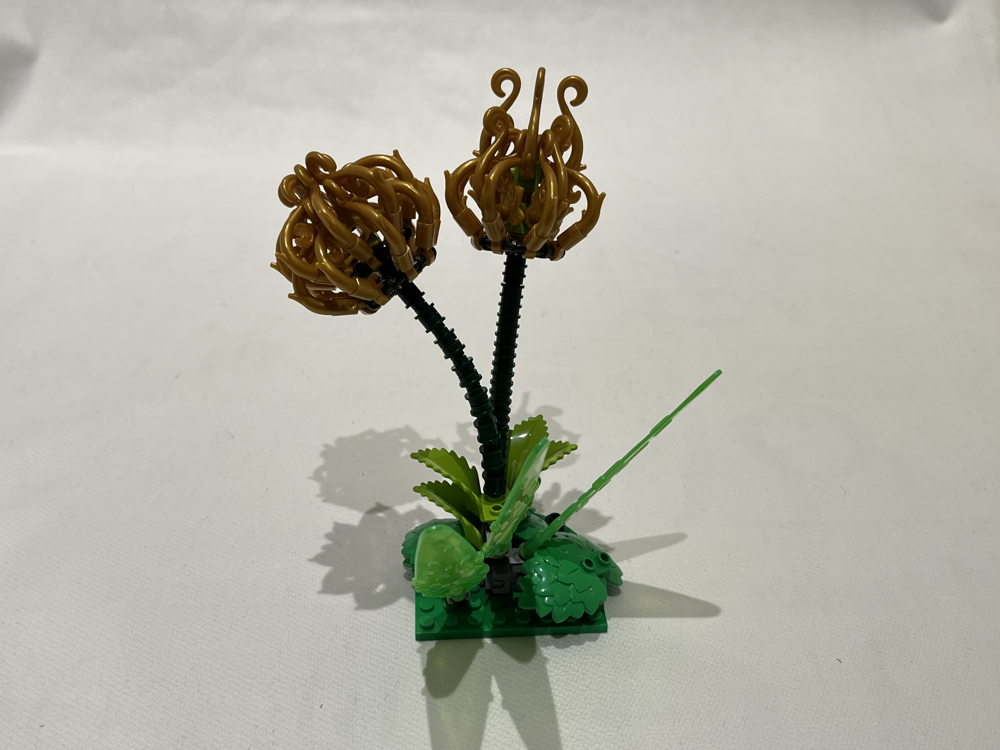
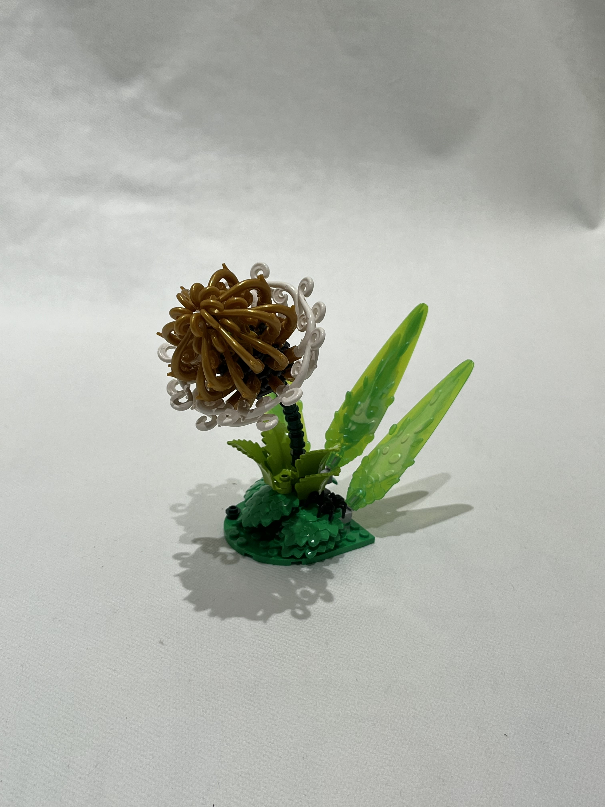
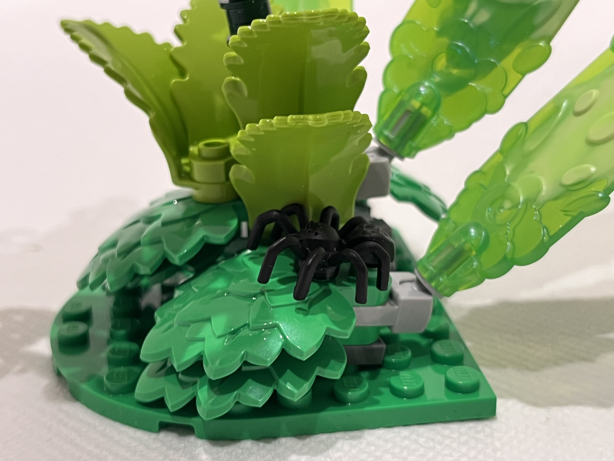

Tears of Laurelin
I am a big fan of Tolkien’s world and I could talk about it for 3 Ages but instead I will let this small build speak this time. This is a special case where I was not inspired by something that means a lot to me but rather the opposite: I recognised it in my build as it started taking shape. I was experimenting with curved pieces one day, since I always see a lot of potential in curly elements for organic building. The golden plant stems with thorns and swirls in particular had my attention for some time. I attached a few of them to each other with various connecting bricks as well as some green pieces and as I formed these elements in my palm I was reminded of the great Trees of Valinor that play a pivotal role in Tolkien’s lore. Long before the sun and moon filled the world with bright light, the Powers of nature gathered to put together their wisdom and create something in a world covered by darkness. As such, two divine trees grew and filled the world with gold and silver light. The golden one, that bloomed in the second half of those days, was named Laurelin, and its brightly shining golden dew was collected in vats and wells to create other smaller sources of light across the land. Much later, but still in ancient days, the Trees of Valinor met a tragic end, but they were not completely gone. A single fiery fruit, and one silver flower survived the darkening of the world, and their vessels were set aloft in the sky, becoming the celestial object we know today as the sun and the moon.



As I was playing around with the golden plant stems, I thought of the elves of old, who carried large urns of golden dew to light up their homes and imagined that every now and then a drop of this bright liquid would spill. In the place of these small droplets, faintly glowing flowers would grow and light up the travelled road towards the great Trees. Hence came the name: Tears of Laurelin for these flowers.